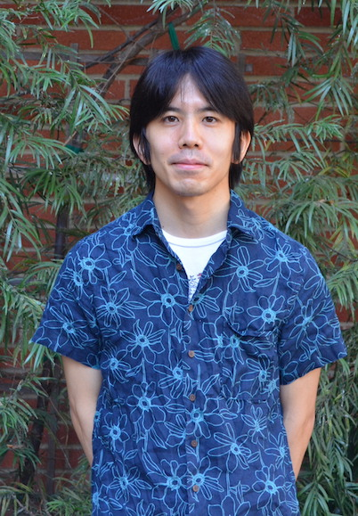

Fumiaki Suzuki
| Email: suzuki [at] math.uni-hannover.de |
| Address: Institute of Algebraic Geometry, Leibniz University Hannover, Welfengarten 1, 30167 Hannover, Germany |
| CV (last updated: 5/9/2024) |
About me
I am a Postdoctoral Researcher at Leibniz University Hannover funded by the ERC Starting Grant "RationAlgic".
My mentor is Stefan Schreieder.
Before that, I was a Hedrick Assistant Adjunct Professor at UCLA under the direction of Burt Totaro.
I completed my PhD at UIC in 2020 under the supervision of Lawrence Ein.
I am interested in algebraic geometry, especially in algebraic cycles, birational geometry, and Hodge theory.
- "On direct summands of products of Jacobians over arbitrary fields" (with F. Scavia), submitted. arxiv
- "Arithmetic and birational properties of linear spaces on intersections of two quadrics" (with L. Ji), to appear in JJournal de l'École polytechnique — Mathématiques arxiv code
- "Two coniveau filtrations and algebraic equivalence over finite fields" (with F. Scavia), to appear in Algebraic Geometry arxiv
- "Non-injectivity of the cycle class map in continuous l-adic cohomology" (with F. Scavia), Forum of Mathematics, Sigma 11 (2023), e6, 19 pp. arxiv journal
- "Non-algebraic geometrically trivial cohomology classes over finite fields" (with F. Scavia), Advances in Mathematics 458 (2024), 109964, 30 pp. arxiv journal
- "Higher-dimensional Calabi-Yau varieties with dense sets of rational points", European Journal of Mathematics 8 (2022), no. 1, 193--204. arxiv journal
- "Factorization of the Abel-Jacobi maps", Épijournal de Géométrie Algébrique 5 (2021), Art. 20, 9 pp. arxiv journal
- "An O-acyclic variety of even index" (with J. C. Ottem, and an appendix by O. Wittenberg), Mathematische Annalen 388 (2024), no. 3, 3025--3052. arxiv journal
- "A pencil of Enriques surfaces with non-algebraic integral Hodge classes" (with J. C. Ottem), Mathematische Annalen 377 (2020), no. 1-2, 183--197. arxiv journal
- "Birational superrigidity and K-stability of projectively normal Fano manifolds of index one", Michigan Mathematical Journal 70 (2021), no. 4, 779--792. arxiv journal
- "A remark on a 3-fold constructed by Colliot-Thélène and Voisin", Mathematical Research Letters 27 (2020), no. 1, 301--317. arxiv journal
- "Birational rigidity of complete intersections", Mathematische Zeitschrift 285 (2017), no. 1-2, 479--492. arxiv journal
Recordings
Arithmetic and birational properties of linear spaces on intersections of two quadrics: video slides
Non-algebraic geometrically trivial cohomology classes over finite fields: video1 video2
An O-acyclic variety of even index: video1 video2 slides (with figures of "24 pizza slices", courtesy of J. C. Ottem)
Birational rigidity of complete intersections: video
Organization
Workshop on Algebraic Cycles (with S. Schreieder and S. Torelli), at Leibniz University Hannover, September 30 - Octorber 2, 2024.
Teaching
Spring 2023, MATH 32A-2
Winter 2023, MATH 131B-1, MATH 131B-2
Fall 2022, MATH 32A-4
Spring 2022, MATH 214B
Winter 2022, MATH 120A-1, MATH 131A-4
Fall 2021, MATH 33A-2
Spring 2021, MATH 131A-4, MATH 131A-5
Winter 2021, MATH 32A-1
Fall 2020, MATH 33A-2
This page was last updated on 7/29/2025.